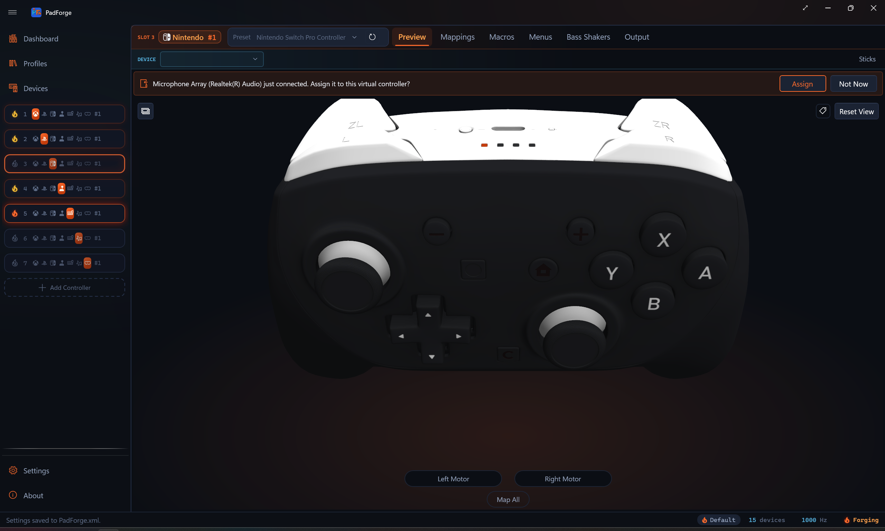

Virtual Controllers¶
Four classes, seven slot categories, one contract: how PadForge's virtual controllers submit state, decode feedback, and talk to their drivers.
Developer reference for the four IVirtualController implementations in v4: HIDMaestro-backed (one class for the Xbox, PlayStation, Nintendo, and Extended categories), KeyboardMouse, MIDI, and VR. Covers state submission, axis/button mapping formulas, rumble/FFB, driver interaction, and type-specific quirks. The lifecycle layer that wraps these classes (off-polling-thread Connect/Disconnect, inactivity destroy, bubble-up cascade) lives on HIDMaestro Deep Dive.
Contents¶
- Architecture Overview
- IVirtualController Interface
- HMaestroVirtualController
- HMaestroVRController
- KeyboardMouseVirtualController
- MidiVirtualController
Architecture Overview¶
graph TB
subgraph Engine["PadForge.Engine (interface + types)"]
IVC["IVirtualController<br/><i>interface</i>"]
VCT["VirtualControllerType<br/>Xbox / PlayStation / Nintendo /<br/>Extended / KeyboardMouse / Midi / Vr"]
GP["Gamepad struct<br/>(XInput layout)"]
ERS["RawHidState<br/>(dynamic axes/buttons/POVs)"]
KRS["KbmRawState<br/>(256 VK + mouse)"]
MRS["MidiRawState<br/>(CC + notes)"]
VRS["VrRawState<br/>(left + right hand pair)"]
end
subgraph App["PadForge.App (implementations)"]
HMVC["HMaestroVirtualController<br/>One class for Xbox / PlayStation / Nintendo / Extended<br/>(HMContext + HMProfile + Type at ctor)"]
VRVC["HMaestroVRController<br/>SteamVR hand pair"]
KBM["KeyboardMouseVirtualController<br/>Win32 SendInput"]
MIDI["MidiVirtualController<br/>Windows MIDI Services"]
end
subgraph Drivers["OS / Driver Layer"]
HM["HIDMaestro<br/>UMDF2 user-mode driver<br/>(225+ profiles)"]
HMVRD["HIDMaestro<br/>native OpenVR driver"]
WIN["Windows<br/>Input Queue"]
WMS["Windows MIDI<br/>Services"]
end
IVC --> HMVC & VRVC & KBM & MIDI
VCT --> HMVC
GP -->|"SubmitGamepadState()"| HMVC
ERS -->|"SubmitRawHidState()<br/>+ MotionSnapshot (IMU channel)"| HMVC
KRS -->|"SubmitKbmState()"| KBM
MRS -->|"SubmitMidiRawState()"| MIDI
VRS -->|"SubmitVrState()"| VRVC
HMVC -->|"HMController.SubmitState()<br/>or SubmitRawReport()"| HM
VRVC -->|"HMVRController.SubmitState()"| HMVRD
KBM -->|"SendInput()<br/><i>per event</i>"| WIN
MIDI -->|"SendSingleMessagePacket()<br/><i>per CC/note</i>"| WMS
HM -.->|"OutputDecoded (Sony + Switch Pro motors / DS5 passthrough)<br/>OutputReceived (XInput / Xbox HID / PID FFB)"| HMVC
style IVC fill:#fff3e0
style VCT fill:#fff3e0
style HMVC fill:#f3e5f5
style HM fill:#e8f5e9
style WIN fill:#e1f5fe
style WMS fill:#f3e5f5
Quick Comparison¶
| Property | Xbox / PlayStation / Nintendo / Extended | VR | KBM | MIDI |
|---|---|---|---|---|
| Class | HMaestroVirtualController |
HMaestroVRController |
KeyboardMouseVirtualController |
MidiVirtualController |
| Backend | HIDMaestro (UMDF2 user-mode driver) | HIDMaestro's native OpenVR driver | Win32 SendInput (no driver) | Windows MIDI Services SDK |
| Required driver | HIDMaestro | HIDMaestro OpenVR driver plus SteamVR | None | Windows MIDI Services |
| Submit methods | SubmitGamepadState(Gamepad) for Xbox slots. A PlayStation overload adds touchpad / IMU / battery. SubmitRawHidState(RawHidState, sticks, triggers) (plus a MotionSnapshot overload) for Nintendo and Extended slots. SubmitRawReport(byte[]) for the Sony USB Report 0x01 layout |
SubmitVrState(in VrRawState) |
SubmitKbmState(KbmRawState) |
SubmitMidiRawState(MidiRawState) |
| Axis format at the SDK boundary | HMGamepadState.Axes = Dictionary<HMAxis, float> normalized to [0, 1] (0.5 = stick center, 0 = released trigger). Y flipped to HID convention (up = 0.0) |
HMVRHandState floats: sticks -1..1 (Y flipped to OpenVR's Y-up), trigger and grip 0..1 |
short delta (mouse) | byte CC (0..127) |
| Button format | HMButton [Flags] enum. The raw path passes all 32 bits |
HMVRButton flags, 8 bits per hand, identical by construction to VrHandRaw.Buttons |
Per-VK SendInput |
MIDI Note On/Off |
| Rumble/FFB | HMController.OutputDecoded (Sony and Switch Pro motors + DS5 effect passthrough) and HMController.OutputReceived (XInput / Xbox HID rumble, full PID FFB for Extended) |
HMVRController.HapticReceived: OpenVR pulses fan into the slot's Vibration (left hand to left motor, right to right) with a per-hand expiry timer |
No | No |
| Change detection | Idle dedup with a 16 ms keepalive on both HM submit paths. An identical frame inside the window is skipped, then re-published so the driver's stale watchdogs never trip. Changes always submit the same tick. Motion frames never dedup. PADFORGE_NO_RAWDEDUP=1 disables the raw-path dedup at launch (regression bisect switch). |
None. Every tick submits | XOR per 64-bit word in the keymask | Per CC/note value |
| Max instances | 16 (across the four HM-backed categories combined, sharing the 16-slot total with KBM, VR, and MIDI) | 1 (SettingsManager.MaxVrSlots). One slot already drives both hands, and SteamVR tracks one pair, so a second would fight the first over the same two devices |
16 | 16 (limited by Windows MIDI Services) |
| Lifecycle | HM Connect()/Disconnect() are off-polling-thread (wrapped in Task.Run by Step5.VirtualDevices). See Lifecycle: Step 5 invariants |
Synchronous. All calls are in-process over a named pipe inside HIDMaestro.Core |
Synchronous | Synchronous |
Source files:
- PadForge.Engine/Common/VirtualControllerTypes.cs. IVirtualController interface + VirtualControllerType enum ([XmlEnum("Sony")] preserves the on-disk name "Sony" for v2 PadForge.xml back-compat) + VirtualControllerGroups.InOrder (the fixed seven-group visual order).
- PadForge.Engine/Common/VrRawState.cs. VrHandRaw / VrRawState plus the VrLayout mapping-key vocabulary.
- PadForge.App/Common/Input/HMaestroVirtualController.cs. Single class for all four HM-backed categories.
- PadForge.App/Common/Input/HMaestroVRController.cs. The SteamVR hand pair.
- PadForge.App/Common/Input/KeyboardMouseVirtualController.cs. Win32 SendInput, KbmRawState combine logic.
- PadForge.App/Common/Input/MidiVirtualController.cs. Windows MIDI Services SDK, virtual endpoint creation.
The lifecycle code that creates / destroys / reorders these instances per slot lives in PadForge.App/Common/Input/InputManager.Step5.VirtualDevices.cs and is documented under HIDMaestro Deep Dive#Lifecycle Step 5 invariants (HM thread pool, inactivity timeout, bubble-up cascade for mid-stack destroys, etc.).
IVirtualController Interface¶
namespace PadForge.Engine
{
public enum VirtualControllerType
{
[XmlEnum("Microsoft")] Xbox = 0, // on-disk alias preserves v2 PadForge.xml
[XmlEnum("Sony")] PlayStation = 1, // on-disk alias preserves v2 PadForge.xml
Extended = 2,
Midi = 3,
KeyboardMouse = 4,
Nintendo = 5, // appended after KeyboardMouse. Numeric values persist, never reorder
Vr = 6 // appended after Nintendo, same rule
}
public interface IVirtualController : IDisposable
{
VirtualControllerType Type { get; }
bool IsConnected { get; }
/// The pad slot index this VC currently occupies. Updated by SwapSlotData
/// so feedback callbacks write to the correct VibrationStates element
/// after a slot reorder.
int FeedbackPadIndex { get; set; }
void Connect();
void Disconnect();
void SubmitGamepadState(Gamepad gp);
void RegisterFeedbackCallback(int padIndex, Vibration[] vibrationStates);
}
}
Defined in: PadForge.Engine/Common/VirtualControllerTypes.cs
Nintendo = 5 is a console-family category like Xbox and PlayStation (own bucket, icon, fixed catalog profile) that rides the raw-HID data path. It has no Customize surface: the slot always deploys the catalog profile as-is.
Vr = 6 is the SteamVR hand pair (issue #49). One slot drives both hands through one HMaestroVRController. It has no per-slot config: the driver ships one identity and haptics fan out like game rumble.
The same file defines VirtualControllerGroups.InOrder (VirtualControllerTypes.cs:62-74), the seven user-facing groups in fixed visual order: Xbox, PlayStation, Nintendo, Extended, KeyboardMouse, Midi, Vr. The order matches the sidebar / dashboard rendering and is not user-reorderable. Each group is independent: operations on one must not affect any other.
Gamepad Struct (Input Contract)¶
XInput-layout struct used as the universal input format for the Xbox and PlayStation categories (and for Extended slots' gamepad-shaped intermediate in Steps 3-4). HMaestroVirtualController.SubmitGamepadState translates it to HMGamepadState. The KBM and MIDI implementations leave SubmitGamepadState as a no-op and read KbmRawState / MidiRawState directly through their own submit methods.
| Field | Type | Range | Description |
|---|---|---|---|
ThumbLX |
short |
-32768..32767 | Left stick X (positive = right) |
ThumbLY |
short |
-32768..32767 | Left stick Y (positive = up) |
ThumbRX |
short |
-32768..32767 | Right stick X (positive = right) |
ThumbRY |
short |
-32768..32767 | Right stick Y (positive = up) |
LeftTrigger |
ushort |
0..65535 | Left trigger (unsigned) |
RightTrigger |
ushort |
0..65535 | Right trigger (unsigned) |
Buttons |
ushort |
Bitmask | 16 bit-constants 0x0001..0x8000: DPad (Up/Down/Left/Right), Start, Back, LS, RS, LB, RB, Guide, Touchpad (0x0800, PlayStation slots, used by macros), A, B, X, Y |
Share |
bool |
true/false | Xbox Series Share button. Separate field because all 16 Buttons bits are taken. HM exposes it as HMButton.Share on Xbox Series profiles |
MicMute |
bool |
true/false | DualSense mic mute (wire bit 0x04 of the third buttons byte). SDL calls this misc1 on PS5 pads, and HM carries it as HMButton.Misc1 |
LeftPaddle, RightPaddle |
bool |
true/false | DualSense Edge back paddles (wire bits 0x40 left, 0x80 right) |
LeftFunction, RightFunction |
bool |
true/false | DualSense Edge front Fn buttons (wire bits 0x10 left, 0x20 right), which SDL exposes as LEFT_PADDLE2 / RIGHT_PADDLE2 |
All five bool extras are set unconditionally. Since HM v1.5.1 the buttonMaps carry an explicit -1 for bits a profile does not declare, which is what ended the identity fallthrough that had Share pressing PS on every Sony pad.
FeedbackPadIndex¶
Tracks which slot this VC occupies for correct VibrationStates[] writes. The runtime writers are RegisterFeedbackCallback (sets the initial index), RetargetToPad (HMaestroVirtualController.cs:379, invoked by InputManager.RerouteVirtualControllersForReorder at InputManager.Step5.VirtualDevices.cs:2523 on intra-group reorder, which also rebuilds the DS5 passthrough and user-effects dispatchers against the new pad), and UnregisterFeedback (HMaestroVirtualController.cs:927, parks the index at -1 on destroy so late driver callbacks no-op). The feedback handler reads the property on every callback (not a captured copy), so it always resolves the current slot index after a reorder. The interface docstring still names a SwapSlotData updater. No such method exists in the codebase.
Type-Specific Submit Methods¶
All implementations have SubmitGamepadState(Gamepad gp) for interface compliance, but the non-gamepad outputs use alternative submit methods and leave it as a no-op:
- Xbox:
SubmitGamepadState(Gamepad gp)(HMaestroVirtualController.cs:474). Standard XInput-shaped path. - PlayStation: the extended overload
SubmitGamepadState(gp, in TouchpadState, in MotionSnapshot, byte batteryPercent, bool batteryCharging)(HMaestroVirtualController.cs:594) carries the Sony sensor / battery payload alongside the gamepad state. - PlayStation (DS4/DS5 USB report):
SubmitRawReport(ReadOnlySpan<byte> report)(HMaestroVirtualController.cs:434). Sony Report 0x01 carrying touchpad / gyro / accel / battery. - Nintendo and Extended (raw HID surface):
SubmitRawHidState(RawHidState raw, int sticks, int triggers)(HMaestroVirtualController.cs:697) plus an overload takingin MotionSnapshot(:761) that feeds the HM v1.3.18 IMU channel. Up to 8 axes, 32-bit button mask, 1 hat. This path carries profile-specific button bits beyond the named set and arbitrary per-profile axis layouts that the fixedGamepadstruct can't express. - VR:
SubmitVrState(in VrRawState raw)(HMaestroVRController.cs:145). The left + right hand pair for one slot. - KeyboardMouse:
SubmitKbmState(KbmRawState raw). Keys, mouse, scroll. - MIDI:
SubmitMidiRawState(MidiRawState state). CC values and note on/off.
HMaestroVirtualController¶
Namespace: PadForge.Common.Input
Visibility: internal sealed
File: PadForge.App/Common/Input/HMaestroVirtualController.cs
Backs: VirtualControllerType.Xbox, .PlayStation, .Nintendo, .Extended
Max instances: 16 (MaxPads, InputManager.cs:80). HM-backed slots share that 16-slot pool with KBM, VR, and MIDI. Xbox-category slots are visible to XInput games as user index 1 through 4 (Microsoft API limit). SDL / DirectInput games see all of them.
One IVirtualController implementation handles every preset and every custom HID descriptor through a single SDK surface: HMContext + HMProfile + HMController. The user-facing category (Xbox / PlayStation / Nintendo / Extended) is supplied at construction so per-type counting in InputManager and InputService keeps working. The actual driver-side device shape is determined by the supplied HMProfile.
For lifecycle invariants that wrap this class (off-polling-thread Connect/Disconnect, inactivity-destroy timeout, bubble-up cascade on mid-stack destroy), see HIDMaestro Deep Dive#Lifecycle Step 5 invariants. This page covers only the controller class itself.
Nintendo category (issue #246)¶
New in 4.1.0. A virtual Nintendo Switch Pro Controller as a first-class slot category beside Xbox and PlayStation, shown in the UI as Nintendo and backed by HIDMaestro v1.3.18's functional Switch Pro (HIDMaestro#33: USB init replies, subcommand request-reply state machine, 60 Hz report-0x30 streaming, HD-rumble decode).

| Aspect | Behavior |
|---|---|
| Preset | One catalog profile for now: switch-pro (VID 0x057E, PID 0x2009). HMaestroProfileCatalog.NintendoProfiles filters on IsNintendoProfile (HMaestroProfileCatalog.cs:307), deliberately that single id per owner scope. Switch 2 Pro, Joy-Cons, NSO retro pads, and the GameCube adapter stay in the Extended category. DefaultNintendoProfileId (InputManager.Step5.VirtualDevices.cs:2097) seeds new slots. |
| Creation | CreateVirtualController routes Nintendo through CreateHMaestroController (InputManager.Step5.VirtualDevices.cs:2149), same as the other HM categories. No Customize surface: the profile-override branch in CreateHMaestroController gates on type == Extended (:2270), so a Nintendo slot always deploys the catalog profile as-is. Reorder rerouting includes the Nintendo group (:2530). |
| Data path | The raw HID surface. SlotRawHidSurface is true for both Extended and Nintendo slots (InputService.cs:5071-5073), so Step 3/4 produce RawHidState and Step 5 submits via SubmitRawHidState with the slot's MotionSnapshot riding beside it (InputManager.Step5.VirtualDevices.cs:1696-1725). |
| Gyro passthrough | The MotionSnapshot overload fills the HM v1.3.18 IMU channel: AccelGX/GY/GZ (g) and GyroDpsX/Y/Z (deg/s) land verbatim in the SDL sensor frame (HMaestroVirtualController.cs:906-913). The driver-side packer owns the wire frame and scale, so the vector round-trips bit-consistent to SDL on the client. Zeroes when the slot maps no motion source. |
| Rumble | The driver decodes the game's 0x01/0x10 HD-rumble writes itself and emits leftMotor / rightMotor on OutputDecoded only for genuine rumble frames. MotorWriteAllowed keeps non-Sony vendors on unconditional trust (the validity-flag semantics are Sony's, :1321), and a dedicated NintendoVid (0x057E) branch feeds the inbound game-feedback pack for Bass Shakers (:1042-1053). |
| Button lettering | Nintendo slots keep the raw Numbered value space and re-letter labels per raw index through the switch-pro profile: B A Y X, L R, ZL ZR, Minus Plus, stick clicks, Home, Capture (MacroItem.cs NintendoExtendedLabel). The descriptor declares 18 buttons, but only the 14 role-mapped indices reach the wire (NintendoLetteredButtonCount). The trailing four are the Joy-Con rail SL/SR bits. ZL/ZR digital clicks ride TriggerClickButtonMask, derived from the profile layout's trigger-click roles (InputService.TriggerClickButtonMaskFrom, InputService.cs:4993). |
| Preview | 2D only (the SWITCHPRO asset set). No 3D mesh yet, so PadPage forces the 2D view for Nintendo slots. |
| HOME LED | Physical Switch pads assigned to the slot take Guide LED brightness through the Lighting tab's "Guide Button LED" card ("Device Default" / "Fixed Brightness" / "Battery Level"). The writer is per device, SDL SDL_SetJoystickLED, which the Switch HIDAPI driver converts to a subcommand 0x38 Set HOME Light packet with 15 nonzero intensity steps (SwitchHomeLedSetter.cs). Works on any connection. This lane is device-scoped, not VC-scoped: it drives the physical pad's LED whatever the slot type. |
Acceptance was hardware-verified: SDL3's HIDAPI_DriverSwitch opens the virtual pad, completes init, reads calibrated sticks and buttons, reports gyro + accel through SDL_GetGamepadSensorData, and Steam Input shows a Pro Controller with Nintendo glyphs.
Fields¶
| Field | Type | Description |
|---|---|---|
_ctx |
HMContext |
Shared HM SDK context owned by InputManager (InputManager.Step5.VirtualDevices.cs:100, _hmaestroContext). One instance per process. |
_profile |
HMProfile |
Profile handle resolved via _hmaestroContext.GetProfile(profileId) ?? HMaestroProfileCatalog.GetProfileById(profileId), optionally rebuilt via HMProfileBuilder.FromProfile for descriptor overrides (Extended + Customize only). |
_cachedProfileSticks, _cachedProfileTriggers |
IReadOnlyList<HMSimpleStick/Trigger> |
Ctor-cached layout lists. HMProfile.Sticks / .Triggers allocate fresh lists per access, and the raw submit path read both per 1 kHz tick (~115 KB/s in the allocation trace). Layout is immutable per profile. |
_type |
VirtualControllerType |
Reported through Type so SlotControllerTypes-based counting keeps working. |
_controller |
HMController |
Live HM device returned by _ctx.CreateController(_profile). Null until Connect(). |
_ffbDecoder |
HMaestroFfbDecoder |
Set when the active profile's HID descriptor contains a PID FFB block (DescriptorHasPidFfbBlock(descriptorHex) at Connect() time). Includes the synthetic Custom profile and any catalog profile whose FFB capability is wired via HMProfileBuilder. Null when the profile has no PID block. |
_fbVibrationStates |
Vibration[] |
Cached feedback array from RegisterFeedbackCallback, read by TickFfb() for the per-tick PID re-evaluation on the engine clock. |
_ds5Dispatcher |
DualSensePassthroughDispatcher |
Per-VC dispatcher forwarding DS5 effect messages (adaptive triggers, lightbar, audio, rumble) to the assigned physical DualSense. Created in RegisterFeedbackCallback only when IsDualSenseVirtual. Torn down first in Disconnect(). |
_userEffectsDispatcher |
UserEffectsDispatcher |
Synthesizes user-configured trigger / lightbar / audio effects from the attached DeviceSlotConfig and forwards them via SDL_SendGamepadEffect. Created by AttachDeviceConfig. Torn down in Disconnect(). |
_dispatcherLock |
object |
Orders AttachDeviceConfig (UI thread) against Disconnect / RetargetToPad (poll thread) so a teardown cannot race an attach into a zombie dispatcher. |
_inboundRumblePack |
long |
Controller-local packed game-feedback state for the rumble-to-audio feature (issue #236). See Inbound game-feedback pack. |
_axLeftStickX .. _axRightTrigger |
HMAxis |
Cached wire-axis keys for the profile's first two sticks and two triggers, resolved once at construction from _profile.AxisMap so the 1 kHz hot path avoids re-walking the layout lists. HMAxis.None means the slot doesn't exist on the profile and the hot path skips it. |
_axLeftTriggerField, _axRightTriggerField |
HMAxis |
Secondary mirror targets for the trigger rows' own wire-field keys (X360 reads triggers from Vx/Vy while its canonical positions are Z/Rz). HMAxis.None when they coincide with the canonical key. Both positions are written so every HM SDK lane reads live trigger values (discussion #130). |
_axesScratch |
Dictionary<HMAxis, float> |
Reused per-call axes dict, allocated once and seeded at construction with every declared axis at rest (sticks 0.5, triggers 0), so the hot path stays allocation-free and never Clear()s away extra-axis seeds. |
_lastSubmittedGp, _lastSubmitTick, _hasSubmitted |
Gamepad, long, bool |
Idle-dedup memory for the plain SubmitGamepadState path (in practice Xbox slots), compared field-by-field against a 16 ms keepalive (SubmitKeepaliveMs = 16, :140). |
_lastRawAxes, _lastRawButtons, _lastRawPovs, _lastRawHadMotion, _lastRawSubmitTick, _hasRawSubmitted |
arrays + flags | Idle-dedup memory for the raw path: content compare on the pooled arrays (RawFrameUnchanged / StoreRawFrame, :714-758). |
s_noRawDedup |
static bool |
PADFORGE_NO_RAWDEDUP=1 disables the raw idle dedup at launch (regression bisect switch, :711-712). |
_disposed |
bool |
Dispose guard. |
SonyVid (0x054C), DualSensePid (0x0CE6), and DualSenseEdgePid (0x0DF2) are const ushort VID/PID gates. IsDualSenseVirtual returns true when _profile matches the Sony VID and either DualSense PID, and gates the DS5 passthrough dispatcher. NintendoVid (0x057E) gates the Switch Pro branch of the rumble decode.
Properties¶
| Property | Type | Description |
|---|---|---|
Type |
VirtualControllerType |
Xbox, PlayStation, Nintendo, or Extended. Matches the slot's SlotControllerTypes[i]. |
IsConnected |
bool |
True after a successful Connect(), false after Disconnect(). |
FeedbackPadIndex |
int |
Slot index for the rumble/FFB callback's vibrationStates[] write target. The property is read on every callback (not captured), so post-reorder swaps still route correctly. |
InboundRumblePack |
long |
Volatile.Read of the packed inbound game-feedback state. A fresh VC reads 0, so create / recreate starts silent. |
ProfileId |
string |
_profile.Id. Examples: "xbox-series-xs-bt", "dualsense-edge-usb", "switch-pro", the Custom profile ID. |
ProfileVendorId |
ushort |
_profile.VendorId. Used by the rumble callback to select the right HID layout. |
ProfileProductId |
ushort |
_profile.ProductId. |
Constructor¶
Stores the three arguments, resolves the cached axis keys, and seeds _axesScratch. Throws ArgumentNullException on null ctx or profile. No driver work happens here. The actual virtual device is created in Connect().
InputManager.CreateHMaestroController is the only call site (InputManager.Step5.VirtualDevices.cs:2249). It resolves the profile (:2260), applies any per-slot overrides for Customized Extended slots via new HMProfileBuilder().FromProfile(baseProfile) (:2328), then constructs the wrapper (:2392).
Connect()¶
HMaestroVirtualController.cs:238.
- Returns immediately if already connected.
_controller = _ctx.CreateController(_profile). The driver-side device appears here.- Resets
_hasSubmitted = false. A freshHMControllermeans a fresh shared section, so the first frame must always submit instead of waiting out a keepalive window against the previous controller's state. - If
DescriptorHasPidFfbBlock(descriptorHex)returns true (any profile with a PID FFB descriptor block, including the synthetic Custom profile and catalog profiles built withHMProfileBuilderFFB pages): allocates_ffbDecoder = new HMaestroFfbDecoder(_controller, descriptorHex)and calls_ffbDecoder.PublishInitialState(). The PID Pool + initial PID State must be published before any hostGetFeaturecan race in. DirectInput'sCDIEffect::CreateEffectissuesGetFeature(PidPool)up-front to discover capabilities, so lazy init on firstOutputReceivedis too late. - Sets
IsConnected = true.
InputManager calls Connect() from a Task.Run continuation in Step 5 Pass 2 (see HIDMaestro Deep Dive#Invariant 1 HM lifecycle does NOT block the polling thread).
Disconnect()¶
HMaestroVirtualController.cs:274.
- Returns immediately if not connected.
- Disposes
_ds5Dispatcher(best-effort, then nulled) BEFORE the controller, so its channel writer is rejecting enqueues by the time_controller.Dispose()fires its finalOutputReceivedclose events. - Disposes
_userEffectsDispatcher(best-effort, then nulled) under_dispatcherLock, so a concurrentAttachDeviceConfigon the UI thread cannot slip between the dispose and the null or construct a replacement after teardown. ItsDisposeunsubscribes thePropertyChangedhandler. _controller?.Dispose(). Driver-side device goes away.- Sets
_controller = null,IsConnected = false.
Dispose()¶
Guarded by _disposed. Calls Disconnect(). The FFB decoder, if present, is released by GC once the controller's OutputReceived subscription is gone.
AttachDeviceConfig(DeviceSlotConfig config)¶
HMaestroVirtualController.cs:330. Attaches a per-slot PadForge.ViewModels.DeviceSlotConfig so user-configured adaptive-trigger / lightbar / audio effects synthesize and forward to the assigned physical DualSense via SDL_SendGamepadEffect. Step 5 calls it right after RegisterFeedbackCallback for every HM-backed slot. The dispatcher's runtime resolve returns no targets when the slot has no physical DualSense mapped, so attaching unconditionally is cheap. Runs under _dispatcherLock and gates on IsConnected, closing the race where an attach after teardown constructed a zombie dispatcher. First call allocates _userEffectsDispatcher and runs ApplyOnce(). Later calls Rebind(config) on the existing dispatcher (idempotent).
ReApplyUserEffects()¶
HMaestroVirtualController.cs:416. Re-runs _userEffectsDispatcher.ApplyOnce(). Called by InputService on every InputManager.DevicesUpdated tick so a freshly reconnected DualSense gets its configured lightbar / trigger / audio state re-pushed without the user touching a slider. No-op when no dispatcher is attached.
TickFfb()¶
HMaestroVirtualController.cs:450. Re-evaluates PID effect state on the engine clock by calling _ffbDecoder.ApplyIfDue(_fbVibrationStates[FeedbackPadIndex]). The OutputReceived handler only applies the decoder when the game sends a report, but effect durations expire on the DEVICE clock. Without this per-tick pass, the last computed vibration latches on the physical pad the moment a game goes quiet (discussion #125). ApplyIfDue is recompute-gated: it runs the full Apply only when effect state changed or a finite effect's expiry is due, so the steady-state poll-tick cost is two reads.
After the apply, it publishes the decoder's LastComputedMotors pair into _inboundRumblePack (:469-471), so PID and vendor FFB feed the bass shakers exactly like the Xbox and Sony motor lanes. The pair comes from the decoder's own game-authored compute, never from the shared Vibration array, which keeps test rumble and macro rumble out by provenance.
Every per-tick submit path calls it first. No-op for non-PID profiles (_ffbDecoder == null), when _fbVibrationStates is null, or when the slot's Vibration element is null.
SubmitGamepadState(Gamepad gp)¶
HMaestroVirtualController.cs:474. Hot path for Xbox slots (PlayStation rides the extended overload below, and Nintendo / Extended ride SubmitRawHidState). Calls TickFfb(), runs the idle dedup, overwrites the six canonical slots in _axesScratch, builds an HMGamepadState { Axes = _axesScratch, Buttons = MapButtons(gp), Hat = MapHat(gp.Buttons) }, and calls _controller.SubmitState(state). It never Clear()s _axesScratch, so the constructor's rest-value seeds for extra axes survive frame to frame.
Idle dedup with a 16 ms keepalive (SubmitKeepaliveMs = 16, skip logic at :499-516). An unchanged state means an identical frame: the driver reads a seqlocked latch and the consumer drives the cadence, so skipping an identical write changes nothing for state-latching consumers. Changes still submit the same tick they happen, so latency is untouched. Only redundant identical frames inside the window drop, which cuts idle submits ~94% at the default 1 kHz poll. RawInput consumers see idle reports at ~62 Hz instead of the poll rate.
The keepalive is 16 ms, not longer, because three driver watchdogs bound how long SeqNo may sit still:
| Watchdog | Location | Trip condition |
|---|---|---|
| Handle recycle | driver.c SharedInputWorkerProc |
500 ms without an event signal (WAIT_TIMEOUT) |
| Stale-wakeup recycle | driver.c |
more than 250 signals without a SeqNo advance (keepalives advance SeqNo, resetting it) |
| GIP teardown | companion.c ReadGipData |
more than 500 consecutive unchanged-SeqNo READS (the 8 ms pump plus every IOCTL_XUSB_GET_STATE), after which DecodeGipToXInput zeroes the XInput state |
The GIP counter is read-rate-bound, not time-bound. A 250 ms keepalive let any consumer mix totalling ~2,000 reads/sec force repeated one-frame releases of held inputs. 16 ms tolerates ~31,000 reads/sec, the same margin the slowest configurable baseline poll interval already had.
Axis normalization. Values land in _axesScratch (a Dictionary<HMAxis, float>) keyed by the wire-axis resolved at construction, not by named HMGamepadState fields (those no longer exist as of HM v1.3.9). Everything normalizes to [0, 1] uniformly: sticks center at 0.5, triggers release at 0. A write is skipped when its cached key is HMAxis.None.
| Gamepad field | Scratch key | Formula |
|---|---|---|
ThumbLX |
_axLeftStickX |
(gp.ThumbLX + 32768f) / 65535f |
ThumbLY |
_axLeftStickY |
(32768f - gp.ThumbLY) / 65535f (Y flipped: XInput Y+ = up, HID Y+ = down) |
ThumbRX |
_axRightStickX |
(gp.ThumbRX + 32768f) / 65535f |
ThumbRY |
_axRightStickY |
(32768f - gp.ThumbRY) / 65535f |
LeftTrigger |
_axLeftTrigger (+ _axLeftTriggerField) |
gp.LeftTrigger / 65535f |
RightTrigger |
_axRightTrigger (+ _axRightTriggerField) |
gp.RightTrigger / 65535f |
Trigger values are mirrored to both the canonical key and the trigger row's own wire-field key when they differ, so every HM SDK lane reads live values instead of the 0.5 seed (discussion #130).
Buttons. MapButtons (HMaestroVirtualController.cs:1246) translates 18 buttons to HMButton flags: A, B, X, Y, LeftBumper, RightBumper, Back, Start, LeftStick, RightStick, Guide, Touchpad (gp.Buttons & 0x0800) from the 16-bit mask, plus five separate bools: Share, Misc1 (DualSense mic mute), LeftPaddle / RightPaddle (Edge back paddles), and LeftPaddle2 / RightPaddle2 (Edge front Fn). HM silently drops any of these on profiles whose descriptor doesn't declare that button position, because since v1.5.1 the buttonMaps carry an explicit -1 for undeclared bits.
Hat. MapHat (HMaestroVirtualController.cs:1355) collapses the four D-Pad bits into a single HMHat direction (North, NorthEast, East, SouthEast, South, SouthWest, West, NorthWest, None). Diagonals take priority over cardinals.
PlayStation overload. SubmitGamepadState(gp, in TouchpadState, in MotionSnapshot, byte batteryPercent, bool batteryCharging) (:594) performs the same axis/button/hat population, then adds touchpad finger tracking (synthesized tracking IDs), gyro/accel scaled to the Sony int16 wire values (GyroScale = 16, AccelScale = 8192, the inverse of SDL3's no-calibration HIDAPI decode), sensor timestamp in 0.33 µs ticks, and battery level. Sony BT virtuals depend on it entirely (their Report 0x31 vendor blob is written by HM's encoder from these state fields). This overload does not dedup.
SubmitRawHidState(RawHidState raw, int sticks, int triggers)¶
HMaestroVirtualController.cs:697, plus the overload taking in MotionSnapshot at :761 (the 3-argument form forwards with default). Used by Step 5 for every Nintendo slot and every Extended slot: SlotRawHidSurface is true for both categories (InputService.cs:5071-5073), and the submit site passes the slot's layout counts and MotionSnapshot (InputManager.Step5.VirtualDevices.cs:1716-1725). Submits up to 8 axes, up to 32 button bits (the named ones plus profile-specific extras), and 1 hat from a single 8-way POV.
Why not just SubmitGamepadState: MapButtons covers a fixed named set, but the XInput-shaped Gamepad struct can't express arbitrary profile-specific button bits or a per-profile axis layout. Those extras would be truncated. This path passes the full 32-bit mask and drives the profile's stick/trigger rows directly.
Idle dedup: the exact basic-path shape (16 ms keepalive), with a content compare on the pooled arrays (RawFrameUnchanged, :714-731). An identical frame within the window skips the seqlock publish + SetEvent. Motion frames never dedup: SensorTimestamp must advance for downstream fusion, so while motion.HasMotion is set every frame submits (:773-794). PADFORGE_NO_RAWDEDUP=1 disables this path's dedup at launch (:711-712).
Axis layout: computed by replicating ExtendedSlotConfig.ComputeAxisLayout. Sticks and triggers are interleaved in groups of (stickX, stickY, trigger) while both are available, then trailing sticks pack at (prev, prev+1) and trailing triggers pack one index at a time. Hardcoded (3, 4) for right-stick X/Y silently dropped Stick 2 Y on every 0-trigger or 1-trigger profile, hence the explicit interleave logic.
Axis conversion (raw signed short to HM [0, 1] float), applied to BOTH sticks and triggers. raw.Axes is already HID-convention (Y+ = down, per Step 3), so sticks pass through the same shift with no extra Y inversion. Sticks rest at signed 0, which ToHmRange maps to 0.5. Triggers rest at short.MinValue, which maps to 0.
Values write into _axesScratch keyed by the cached profile stick/trigger rows. This path DOES Clear() the scratch dict first (unlike the SubmitGamepadState overloads), then repopulates every axis the profile exposes.
Button mask: all 32 bits of RawHidState.IsButtonPressed(i) are passed through to (HMButton)buttonMask. HidReportBuilder iterates bits 0..31, so any bit beyond the named set surfaces at the descriptor's corresponding position (direct index, or via the profile's ButtonMap if declared). Profiles with more buttons than the named set (Stadia, flight sticks, wheels) rely on this.
Hat: raw.Povs[0] (centidegrees, -1 = centered) is rounded to the nearest octant via ((pov + 2250) / 4500) % 8, then mapped to HMHat.
IMU channel (HM v1.3.18): when motion.HasMotion, the state's AccelGX/GY/GZ and GyroDpsX/Y/Z fields are filled verbatim from the MotionSnapshot (already g and deg/s in the SDL sensor frame, :906-913). The per-profile packer owns the wire frame and scale, so the vector round-trips bit-consistent to SDL on the client. This is the Nintendo category's gyro passthrough.
SubmitRawReport(ReadOnlySpan report)¶
HMaestroVirtualController.cs:434. Pass-through to _controller.SubmitRawReport(report) (after a TickFfb()). Step 5 calls this for PlayStation slots whose profile carries DS4-extended fields (touchpad, gyro, accel, battery) that HMGamepadState doesn't model. On USB Sony slots this is the only submit per poll now that Step 5 skips the redundant extended leg when a raw packer exists.
Inbound game-feedback pack (issue #236)¶
The controller-local source for the rumble-to-audio feature (the Pad page's "Bass Shakers" tab). Every rumble decode branch packs the game-authored motor values into _inboundRumblePack via Engine.Common.LfeOutputState.Pack(low, high, triggerLeft, triggerRight) (PadForge.Engine/Common/LfeOutputState.cs, four ushort voices in one long so both sides use a single Volatile access, no locks, no torn reads).
Contract points:
- Keyed by the VC instance, never by pad index. The slot-reorder reroute re-points
_virtualControllers[]and the pack travels with its VC, so a swap can never land slot A's rumble on slot B the way a capturedFeedbackPadIndexcould. The poll thread's feedback lane readsInboundRumblePackthrough the CURRENT array position each tick. - Provenance-clean by construction. Only the game-write callbacks fill it: the XInput branch (
:1156), the Xbox Series BT short-HID branch (:1189), the Xbox long-HID branch (:1208, body motors only, trigger voices preserved), the gated Sony branch (:1038), the Nintendo branch (:1051), and the PID FFB lane throughTickFfb(:469). Test rumble and macro rumble never cross it, which is what lets the audio path read it without feedback loops. - Zeros pass through unfiltered. Browser Gamepad API dual-rumble is a square wave alternating full/zero. The off phase is part of the duty cycle, not noise.
- A fresh VC reads 0, so create / recreate starts silent.
The per-slot audio routing UI states the same scope: "Works with Xbox, DualShock 4 / DualSense, and Nintendo Switch Pro virtual controllers, plus Extended virtual controllers with force feedback, such as racing wheels. Only game feedback plays through the audio output. Macro and test rumble stay on the controller."
UnregisterFeedback()¶
HMaestroVirtualController.cs:927. Called synchronously by DestroyVirtualController BEFORE the motor zero. Parks FeedbackPadIndex at -1 and nulls _fbVibrationStates. The driver-side handlers die only when the async dispose reaches _controller.Dispose() (seconds later for xinputhid), and every handler guards on FeedbackPadIndex, so parking it makes late callbacks no-op instead of repopulating a slot this VC no longer owns.
RegisterFeedbackCallback(int padIndex, Vibration[] vibrationStates)¶
HMaestroVirtualController.cs:933. Stores padIndex in FeedbackPadIndex, caches vibrationStates in _fbVibrationStates for the per-tick TickFfb() pass, then (when _controller != null) subscribes to both OutputDecoded and OutputReceived.
Setup work.
- For DualSense virtuals (
IsDualSenseVirtual), allocates aDualSensePassthroughDispatcher(padIndex)and callsStart(). Its lifetime matches the subscription. - Subscribes to
_controller.OutputDecoded(:987). This carries pre-decoded, transport-agnostic fields, and serves two producers: Sony profiles (DS4 / DS5, either transport) and the virtual Switch Pro (the HM driver decodes the 0x01/0x10 HD-rumble writes itself and emits the motor fields only for genuine rumble frames). - Subscribes to
_controller.OutputReceived(:1093) for the XInput, Xbox HID, and PID FFB paths below.
OutputDecoded motor gate. When leftMotor / rightMotor bytes are present, the write into vibrationStates[idx] (byte * 257) is allowed by MotorWriteAllowed(_profile.VendorId, sonyMotorsValid) (:1321): Sony profiles require the full SonyMotorsValid trust gate, while any other vendor (Switch Pro's synthesized decode, future flag-less profiles) keeps unconditional trust, because the validity-flag semantics are Sony's. SonyMotorsValid (:1308) requires all three legs, per linux-hid hid-playstation.c (motor bytes are assigned only inside the block that asserts VALID_FLAG0 bit 0, and an audio/lightbar-only report carries motor=0 meaning "ignore", not "stop"):
declaredSize > 0andRawBytes.Length >= declaredSize(at least, not exactly: Windows sizes every BT host write to the largest declared output report, so an equality was unsatisfiable on Bluetooth and silently killed rumble, lightbar, and triggers on every BT frame).- CRC valid (
CrcValidalone is insufficient: it initializes true and is skipped when the footer is absent, hence the length leg). - The motor-valid flag asserted: mask
0x01for DS4,0x03for DS5.
A failing gate PRESERVES the previous motors, for both consumers (the VibrationStates write and the #236 pack): before the gate existed, a lightbar-only report zeroed rumble on every non-Sony device on the slot. Flag asserted with both bytes zero IS a real stop. When the gate passes, the pack is written. On Nintendo profiles (NintendoVid, :1042-1053) the pack rides directly, because that wire has no validFlag/CRC to gate on and the driver only emits motors for genuine rumble frames.
DS5 passthrough forward. When the DualSense passthrough is active and an effectPayload byte[] is present, the handler enqueues it to _ds5Dispatcher (report 0x02) and calls UserEffectsDispatcher.NotifyExternalSubsystems(idx, effectPayload). The forward is integrity-gated too (declaredSize > 0, length at least declared, CrcValid, :1065-1079): a full-length BT report with a corrupt CRC decodes every field with CrcValid=false, and forwarding it would re-frame corrupt bytes into a fresh physical write and poison the grace-window subsystem mirror.
The OutputReceived handler dispatches by pkt.Source, HMaestroProfileCatalog.IsXboxProfile(_profile), and _ffbDecoder != null (never by literal VID). A leading branch also forwards Sony vendor test commands (HidFeature, report 0x80) to _ds5Dispatcher.EnqueueFeature and returns.
| Gate | pkt.Source |
Length | Meaning | Motor write |
|---|---|---|---|---|
| any | XInput |
>= 5 | XUSB SET_STATE rumble: data[2] = L, data[3] = R main motors. When len >= 7, data[4] / data[5] are the per-trigger impulse motors (XINPUT_VIBRATION_EX). Shorter packets zero the trigger motors. |
* 257 |
IsXboxProfile |
HidOutput |
4..7 | Xbox Series BT short HID rumble: data[0] / data[1] = L/R trigger impulse motors, data[2] / data[3] = L/R main motors, magnitude 0..100 |
* 655 |
IsXboxProfile |
HidOutput |
>= 8 | Xbox wired / wireless-receiver long rumble: data[5] = L, data[6] = R |
* 257 |
_ffbDecoder != null |
HidOutput |
any | HID PID FFB output report. Routes to _ffbDecoder.OnHidOutput(reportId, data), then _ffbDecoder.Apply(vibrationStates[idx]). Catalog profiles built with AddPidFfbBlock keep their original VID/PID here. |
written by decoder |
_ffbDecoder != null |
HidFeature |
any | HID PID FFB feature report (Create New Effect). Routes to _ffbDecoder.OnHidFeature(reportId, data). |
none directly |
Each of the first three branches also packs the decoded pair into the inbound game-feedback pack.
The Xbox Series BT 0..100 magnitude scaled by 655 was verified against HM's own test app log of xbox-series-xs-bt plus gamepad-tester.com. Browser Gamepad API square-wave dual-rumble alternates hi=127 / hi=0. The "off" phase is part of the duty cycle, not noise, so packets where both motor bytes are zero must still be forwarded. The Xbox short-HID trigger bytes at data[0] / data[1] were confirmed from a 1518-capture Game Controller Tester impulse-trigger run (2026-05-19, all len=7).
Threading: the callback runs on the HM SDK's output-dispatch thread. Vibration motor fields are ushort and aligned writes are atomic on x64. The polling thread reads these for rumble forwarding, dispatching to one of four writers depending on the source pad family: UserEffectsDispatcher for Sony pads (DualShock 4 / DualSense), XboxImpulseHidWriter raw HID for Xbox One+ pads (Xbox One / Elite / Series), LogitechRawHidWriter / FanatecRawHidWriter / ThrustmasterRawHidWriter raw HID for the vendor-FFB family (Logitech / Fanatec / Thrustmaster wheels plus Fanatec pedals, gated as isVendorFfb and intercepted before the SDL path), or SDL_RumbleJoystick / SDL haptic effects for everything else. Per the architecture-invariant rules, each pad family has a single writer, and SDL rumble is skipped on the Sony, Xbox One+, and vendor-FFB families.
HMaestroFfbDecoder¶
File: PadForge.App/Common/Input/HMaestroFfbDecoder.cs
Visibility: internal sealed
Allocated: by HMaestroVirtualController.Connect() when the profile's HID descriptor contains a PID FFB block (gate: DescriptorHasPidFfbBlock(descriptorHex)).
Decodes HID PID 1.0 effect reports delivered through HMOutputPacket and aggregates running effects into a single Vibration for the physical FFB device. One instance per FFB-capable virtual controller (the synthetic Custom profile, or a catalog profile with the FFB block in its descriptor).
The dispatch logic mirrors the v2 vJoy FfbCallback semantics:
- Dominant running effect drives
Vibration.DirectionandVibration.SignedMagnitude. - Running effects polar-split into left/right motor scalars for rumble-only physical devices.
- Condition effects pass through to
Vibration.ConditionAxes.
Report-ID dispatch¶
Report IDs are defined in HMaestroFfbDescriptor.OutputReportId and dispatched by OnHidOutput (HMaestroFfbDecoder.cs:206):
| Report ID | Constant | Decoder |
|---|---|---|
0x11 |
SetEffect |
DecodeSetEffect (also handled by OnHidFeature for Create New Effect) |
0x13 |
SetCondition |
DecodeSetCondition |
0x14 |
SetPeriodic |
DecodeSetPeriodic |
0x15 |
SetConstantForce |
DecodeSetConstant |
0x16 |
SetRampForce |
DecodeSetRamp |
0x1A |
EffectOperation |
DecodeEffectOperation |
0x1B |
BlockFree |
DecodeBlockFree |
0x1C |
DeviceControl |
DecodeDeviceControl |
0x1D |
DeviceGain |
DecodeDeviceGain |
The descriptor bytes that carry these IDs to the host are produced by HIDMaestro v1.1.41+'s HidDescriptorBuilder.AddPidFfbBlock(). PadForge only needs the IDs. It does not emit the descriptor itself.
PublishInitialState()¶
HMaestroFfbDecoder.cs:119. Called from HMaestroVirtualController.Connect() immediately after CreateController. Publishes the PID Pool and the initial PID State via _controller.PublishPidPool(...) and _controller.PublishPidState(0, _stateFlags). Without these the SDK returns STATUS_NO_SUCH_DEVICE for the Pool Report and DirectInput cleanly concludes "no FFB". This is the gate that turns the Custom-VID device into a real DirectInput PID FFB device on the wire.
Block Load is driver-owned: HM v1.1.37+ allocates the EffectBlockIndex and writes BL fields synchronously inside the SetFeature(0x11) IOCTL handler, so PadForge does not pre-publish a Block Load.
Effect tracking¶
private readonly Dictionary<byte, EffectState> _effects; // keyed by EffectBlockIndex
private byte _deviceGain = 255; // 0..255 from DeviceGain report
private byte _lastEbi; // last allocated EBI
private PidStateFlags _stateFlags; // ActuatorsEnabled | ActuatorPower
private EffectState _pending; // EBI=0 parameter buffer
pid.dll's flow on CreateEffect is:
- Set Periodic / Set Constant / Set Ramp / Set Condition with
EBI=0. SetFeature(0x11)Create New Effect. Driver allocatesEBI=N.- Set Effect (0x11) with
EBI=Nto bind type, duration, direction.
Step 1 carries the magnitude / period. _pending captures it, then OnHidFeature (step 2) drains it into the freshly created effect at EBI=N. DecodeSetEffect also drains _pending when it sees a non-zero EBI, because some host stacks pick the EBI internally and never round-trip through SetFeature.
Apply(Vibration vib) and ApplyIfDue(Vibration vib)¶
Apply at HMaestroFfbDecoder.cs:285. ApplyIfDue at :275. ApplyIfDue is the poll-tick entry used by TickFfb: it runs the full Apply only when effect state changed (_applyDirty) or a finite effect's expiry is due (_nextExpiryTick). Skipping is byte-identical: vib retains the last computed values and LastComputedMotors is unchanged. Before this gate, the identical projection was recomputed under the lock at poll rate.
Apply aggregates running effects into the supplied Vibration:
- For each running, non-zero effect: gain-scale magnitude (
absMag * (es.Gain / 255.0)), pick dominant by gain-scaled magnitude, polar-split viasin((direction / 32767 * 360 + 180) % 360)intoleftScale/rightScale, accumulate intoleftSum/rightSum. - Apply device-level gain:
* (_deviceGain / 255.0). - Scale 0..10000 to 0..65535 and clamp. Write to
vib.LeftMotorSpeedandvib.RightMotorSpeed. - If any effect was running, set
vib.HasDirectionalData = trueand populateEffectType,SignedMagnitude,Direction,Period,DeviceGainfrom the dominant effect.ForceFeedbackStateconsumes these to driveSDL_HapticEffecton physical FFB devices. - If a Spring / Damper / Inertia / Friction effect is running, populate
vib.ConditionAxesfrom itsConditionAxisCountaxes, thenvib.HasConditionData = true.ForceFeedbackState.SetConditionHapticForcesmaps these toSDL_HapticCondition.
The "where force COMES FROM" to "toward" 180-degree shift is per HID PID 1.0: a force coming from East (90 degrees) pushes West, biasing the left motor.
Apply also publishes the computed pair atomically into LastComputedMotors (HMaestroFfbDecoder.cs:40), the game-authored source the #236 inbound pack reads in TickFfb. It is never sourced from the shared Vibration object, so the bass-shaker path inherits the decoder's provenance.
HMaestroVRController¶
Namespace: PadForge.Common.Input
Visibility: internal sealed
File: PadForge.App/Common/Input/HMaestroVRController.cs
Backs: VirtualControllerType.Vr
Max instances: 1 (SettingsManager.MaxVrSlots, SettingsManager.cs:85). Enforced by SettingsManager.CanSlotTakeType (:99), which short-circuits to true for every other type
A SteamVR left + right hand pair (issue #49) served by HIDMaestro's native OpenVR driver (HM#32, v1.6.0). One instance drives BOTH hands through one HMVRController pipe. The driver registers the devices with SteamVR only while this consumer is live, so an idle machine shows no phantom controllers.
All calls are in-process (named-pipe transport inside HIDMaestro.Core), so Connect / Disconnect need none of the bounded-RPC ceremony the MIDI wrapper carries for midisrv. Step 5 constructs it directly, with no profile and no HMContext (InputManager.Step5.VirtualDevices.cs:2152).
IsAvailable()¶
HMaestroVRController.cs:51. True when SteamVR itself is present (HMVR.IsSteamVRInstalled). Without SteamVR the driver has no host to register with, so slot creation refuses early with a clear message instead of a silent dead pipe. Cached for 5 seconds (AvailabilityTtlMs), because the probe walks Steam's library metadata on disk and the sidebar rail queries once per slot. A separate s_availHasValue flag marks a real answer: seeding the cache timestamp with long.MinValue overflowed the TTL compare to a large negative value, which always reads as inside the TTL, so the first call returned the default false without ever probing. ResetAvailability() (:84) clears it.
Connect()¶
HMaestroVRController.cs:86. Throws InvalidOperationException when SteamVR is absent or when HMVR.EnsureDriverRegistered() fails. Otherwise constructs an HMVRController, subscribes HapticReceived, and flips _connected.
Disconnect()¶
HMaestroVRController.cs:103. Clears _connected first, unsubscribes and disposes the pipe, then under _hapticLock disposes the expiry timer and zeroes both haptic lanes.
SubmitVrState(in VrRawState raw)¶
HMaestroVRController.cs:145. Packs the pipeline's VrRawState into the driver's HMVRState and submits it. Button bits are identical by construction (VrHandRaw.Buttons mirrors HMVRButton), so the conversion is a cast, never a table.
| Field | Source domain | Wire |
|---|---|---|
Buttons |
byte, 8 flags |
(HMVRButton)hand.Buttons |
Trigger, Grip |
one-sided 0..32767 |
/ 32767f to 0..1 |
StickX |
bipolar -32768..32767 |
/ 32767f positive, / 32768f negative |
StickY |
same | same, then negated |
PoseValid |
n/a | always false in v1. The driver holds the controllers at its fixed standing-height default |
StickY carries the lane's single sign flip. Step 3's evaluator output keeps SDL's native convention (Y positive = down), OpenVR's joystick Y is positive-up, and the one-seam rule puts the flip at the pack seam rather than anywhere upstream.
SubmitGamepadState is a no-op, kept for interface compliance.
Haptics¶
OnHapticReceived (:182) fans OpenVR pulses into the slot's Vibration entry, the same lane game rumble rides: left hand to LeftMotorSpeed, right hand to RightMotorSpeed, amplitude clamped 0..1 and scaled by 65535.
A pulse must decay, because the rumble path latches motor speeds until someone writes zero. Each hand keeps an expiry deadline and a one-shot Timer zeroes its lane when the last pulse ends (ScheduleExpiryLocked at :219, OnHapticExpiry at :234). MinPulseMs = 50 floors a pulse's audible length: OpenVR apps send micro-pulses, often 0 to 5 ms, at high repeat rates, and a literal duration would expire before the 16 ms rumble keepalive ever forwarded it.
The handler re-checks _connected INSIDE _hapticLock. Disconnect flips the flag and only then takes the lock, so a check outside it can pass, block, and resume after teardown, re-latching a motor on a slot the VC no longer drives and arming a timer nothing will dispose.
VrRawState¶
PadForge.Engine/Common/VrRawState.cs. All value fields on purpose, so a struct assign copies (the KbmRawState discipline).
public struct VrHandRaw
{
public byte Buttons; // mirrors HMVRButton: System=1, A=2, ATouch=4, B=8,
// BTouch=16, TriggerClick=32, GripClick=64, StickClick=128
public short Trigger; // one-sided 0..32767
public short Grip; // one-sided 0..32767
public short StickX; // bipolar -32768..32767
public short StickY;
}
public struct VrRawState
{
public VrHandRaw Left;
public VrHandRaw Right;
public void Clear();
public void Merge(in VrRawState other);
}
Merge follows the gamepad-merge convention: buttons OR together, axes keep the larger deflection. MergeHand widens to int before Math.Abs, because the short overload throws OverflowException at short.MinValue, which is exactly what a fully deflected axis produces. Two devices on a VR slot plus one full deflection therefore threw out of Step 4 every poll and cleared the slot's combined output about 1000 times a second.
VrLayout in the same file is the shared mapping-key vocabulary ("VrLTrigger", "VrRStickXNeg", and so on), indexed by HMVRButton bit position so the Step 3 mapper, the layout translation, and the mapping UI all agree on one table.
MidiVirtualController¶
Namespace: PadForge.Common.Input
Visibility: internal sealed
SDK dependency: Microsoft.Windows.Devices.Midi2 (Windows MIDI Services, from nuget-local/)
Max instances: 16 (MaxMidiSlots = MaxPads)
Availability: Requires Windows MIDI Services, detected at runtime by IsAvailable() (SDK init plus EnsureServiceAvailable(), no OS-version gate). MIDI button hidden when unavailable.
Creates a system-wide virtual MIDI endpoint via Windows MIDI Services. Appears in DAWs and MIDI applications as "PadForge MIDI N". Falls back gracefully without MIDI Services.
Type gating: the dashboard's MIDI type tile is inert while DashboardViewModel.IsMidiServicesInstalled is false (DashboardPage.xaml.cs:138-145), so a slot cannot be switched to MIDI on a machine without the service. Every other type accepts the switch.
Static Fields¶
| Field | Type | Description |
|---|---|---|
_isAvailable |
bool? |
Cached availability check result (nullable for first-check detection) |
_availLock |
object |
Lock protecting availability check (readonly) |
_initializer |
MidiDesktopAppSdkInitializer |
SDK initializer instance (kept alive for SDK lifetime) |
Instance Fields¶
| Field | Type | Description |
|---|---|---|
_session |
MidiSession |
Windows MIDI Services session |
_connection |
MidiEndpointConnection |
Endpoint connection for sending messages |
_virtualDevice |
MidiVirtualDevice |
The virtual MIDI device (SuppressHandledMessages = true) |
_connected |
bool |
Whether this controller is connected |
_disposed |
bool |
Dispose guard |
_padIndex |
int |
Slot index (readonly) |
_channel |
int |
MIDI channel 0–15 (readonly, clamped via Math.Clamp) |
_instanceNum |
int |
1-based MIDI-type instance number (readonly) |
_lastCcValues |
byte[] |
Last sent CC values (change detection, initialized to 64 = center) |
_lastNotes |
bool[] |
Last sent note states (change detection) |
Configurable Properties¶
| Property | Type | Default | Description |
|---|---|---|---|
CcNumbers |
int[] |
{1, 2, 3, 4, 5, 6} |
MIDI CC numbers for each CC slot |
NoteNumbers |
int[] |
{60, 61, ..., 70} |
MIDI note numbers for each note slot (11 notes) |
Velocity |
byte |
127 |
Note-on velocity for button presses |
These are internal properties set by the mapping system before Connect(). They determine array sizes for change detection.
Auto-Mapping¶
When a recognized gamepad is assigned to a MIDI slot, PadForge auto-maps:
- 6 axes to CC slots 0–5 (LX, LY, LT, RX, RY, RT -> MidiCC0–MidiCC5)
- 11 buttons to Note slots 0–10 (A, B, X, Y, LB, RB, Back, Start, LS, RS, Guide -> MidiNote0–MidiNote10)
Same gamepad detection as the HM-backed slots (CapType == InputDeviceType.Gamepad). Non-gamepad devices get no auto-mapping.
Properties¶
| Property | Type | Description |
|---|---|---|
Type |
VirtualControllerType |
Always VirtualControllerType.Midi |
IsConnected |
bool |
Read from _connected |
FeedbackPadIndex |
int |
Slot index for feedback routing (unused. MIDI has no rumble) |
Constructor¶
Stores pad index, clamps channel to 0–15, stores 1-based instance number.
Connect()¶
Returns early if already connected. Initialization sequence:
- Creates
MidiDeclaredEndpointInfowith name"PadForge MIDI {instanceNum}", product ID"PADFORGE_MIDI_{instanceNum}", MIDI 1.0 protocol. - Creates
MidiVirtualDeviceCreationConfigwith slot description. - Adds a
MidiFunctionBlock(bidirectional, Group 0,RepresentsMidi10Connection = YesBandwidthUnrestricted). MidiSession.Create(deviceName). Throws if null.- Creates virtual device via
MidiVirtualDeviceManager.CreateVirtualDevice(config).SuppressHandledMessages = true. - Creates
MidiEndpointConnectionto the device's endpoint ID. - Adds virtual device as message processing plugin.
- Opens connection. Throws if false.
- Sets
_connected = true. - Initializes
_lastCcValues(filled with 64) and_lastNotes.
Error handling: Steps 5–8 failure triggers full cleanup (disconnect, dispose session, null references) before re-throw. Prevents leaked MIDI sessions.
Disconnect()¶
Returns early if not connected. Sequence:
- Sets
_connected = falseimmediately (prevents sends during cleanup). - Sends Note Off for held notes to prevent stuck notes in DAWs.
- Nulls
_lastNotes. - Disconnects endpoint, nulls
_connection. - Nulls
_virtualDevice. - Disposes and nulls
_session.
SubmitGamepadState(Gamepad gp)¶
Legacy path. Not used for dynamic MIDI. Kept as a no-op for IVirtualController interface compliance.
SubmitMidiRawState(MidiRawState state)¶
Sends MIDI messages from MidiRawState. Returns immediately if not connected. Only sends on value change.
CC messages: Iterates min(state.CcValues.Length, _lastCcValues.Length, CcNumbers.Length). Changed CC values trigger SendCC(). Triple-min guards against mid-stream config changes.
Note messages: Same triple-min pattern. Changed notes trigger SendNoteOn() or SendNoteOff().
Thread safety: _connection is read into a local before null-check and send, preventing races with Disconnect().
MidiRawState¶
// In PadForge.Engine/Common/GamepadTypes.cs
public struct MidiRawState
{
public byte[] CcValues; // CC values 0–127 per CC slot
public bool[] Notes; // Note on/off per note slot
public static MidiRawState Create(int ccCount, int noteCount);
}
Dynamic-sized state struct. Create() allocates zeroed arrays of the specified sizes. Clear() resets CC values to 64 (center) and notes to false. Connect() seeds the controller's own _lastCcValues to 64.
RegisterFeedbackCallback(int padIndex, Vibration[] vibrationStates)¶
No-op. MIDI has no rumble/force feedback.
Dispose()¶
Guarded by _disposed. Calls Disconnect().
MIDI Message Helpers¶
All messages are built as MIDI 1.0 UMP (Universal MIDI Packet) via MidiMessageBuilder.BuildMidi1ChannelVoiceMessage() and sent via _connection.SendSingleMessagePacket().
| Helper | MIDI Status | Description |
|---|---|---|
SendCC(int ccNumber, byte value) |
ControlChange |
Sends CC on configured channel, group 0 |
SendNoteOn(int note, byte velocity) |
NoteOn |
Sends Note On on configured channel |
SendNoteOff(int note) |
NoteOff |
Sends Note Off (velocity 0) on configured channel |
Static Availability Check¶
IsAvailable() -> bool¶
Thread-safe, double-checked locking on _availLock. Caches result in _isAvailable.
- Fast path: if
_isAvailable.HasValue, returns cached value. - Under lock: creates
MidiDesktopAppSdkInitializer.Create(). InitializeSdkRuntime(). Disposes and caches false on failure.EnsureServiceAvailable(). Disposes and caches false on failure.- Success: keeps
_initializeralive (required for SDK lifetime), caches true. - Any exception: caches false.
ResetAvailability()¶
Resets cached availability so IsAvailable() re-evaluates. Disposes _initializer if present, sets _isAvailable = null. Call after installing MIDI Services.
Shutdown(bool skipDispose = false)¶
Disposes the SDK initializer. Call on application exit.
skipDispose: When true, abandons the initializer without Dispose(). Use before uninstalling MIDI Services. Dispose() calls into the runtime and crashes if the service is being removed. Resets _isAvailable = null.
KeyboardMouseVirtualController¶
Namespace: PadForge.Common.Input
Visibility: internal sealed
No driver required. Always available on all Windows systems
Max instances: 16 (MaxPads)
Translates KbmRawState into keyboard and mouse input via Win32 SendInput. Maps controller inputs to key presses, mouse movement, clicks, and scroll. No virtual device. Output goes directly to the Windows input queue.
Fields¶
| Field | Type | Description |
|---|---|---|
_connected |
bool |
Connection state |
_disposed |
bool |
Dispose guard |
_prevKeys0..3 |
ulong |
Previous key states for change detection (4 x 64 bits = 256 VK codes) |
_prevMouseButtons |
byte |
Previous mouse button state for change detection |
_mxAccumulator, _myAccumulator |
float |
Sub-pixel residue for the stick-deflection mouse lane. Fractional pixels accumulate across frames instead of truncating to 0. |
_scrollAccumulator, _scrollAccumulatorH |
float |
Sub-notch residue for vertical and horizontal scroll. |
_gxAccumulator, _gyAccumulator |
float |
Gyro lane's own sub-count remainder. Separate from the deflection lane's so a stick and a gyro on the same axis do not trade fractional motion, and so the direction-flip reset only discards gyro's own carry. |
_txAccumulator, _tyAccumulator |
float |
Touchpad lane's sub-count remainder, the gyro pair's twin. |
_lastAbsCursorX, _lastAbsCursorY |
int |
Last absolute-pointer pixel written, so the per-poll SetCursorPos is skipped when the target hasn't moved. int.MinValue = no write yet / pointer released, which forces the next valid frame to write. |
_lastSubmitTimestamp, _submitDt |
long, float |
Wall-clock delta between SubmitKbmState calls (Stopwatch ticks), so the cursor and scroll rate lanes are poll-rate-independent. |
_socd |
SocdCleaner |
SOCD cleaner (discussion #205, Snap Tap). Rewrites the logical key bitset before change detection. No-op while mode is Off. |
_appliedSocdMode, _appliedSocdPairs |
string |
Last-applied SOCD config strings. Reference-compared in ApplySocdConfig for a two-compare steady-state fast path. |
Rate Constants and Helpers¶
Cursor and scroll speeds are time-based rates, not per-poll amounts. The old constants (15 px per poll, 3 scroll lines per poll) made speed a function of the polling-interval setting: at the default 1 ms interval, full deflection meant 15,000 px/s. The replacement is deflection x full-scale x wall-clock dt, which is poll-rate-independent.
| Constant | Value | Description |
|---|---|---|
MouseFullScalePxPerSec |
1200f |
Cursor speed at full axis deflection, pixels per second. The proven desktop-cursor reference is DS4Windows' stick-as-mouse: velocity x timeDelta with a default full-scale of sensitivity 25 x MOUSESPEEDFACTOR 48 = 1,200 px/s (DS4Windows Mapping.cs:829, :5437). The per-stick KBM speed knob upstream scales from here. |
ScrollFullScaleNotchesPerSec |
100f / 3f |
Scroll speed at full deflection, ~33 wheel notches per second. Reference is DS4Windows' stick-wheel: a 10 ms cadence with full deflection counting one notch per three runs. |
| Helper | Signature | Contract |
|---|---|---|
ClampSubmitDt |
float ClampSubmitDt(double seconds) |
Seconds credited to one submit: never negative, capped at 50 ms so a stall (debugger, suspend) resumes gently instead of spending the whole gap as one giant delta (KeyboardMouseVirtualController.cs:87). |
MouseStickPixels |
float MouseStickPixels(short deflection, float dtSeconds) |
deflection / 32767 * MouseFullScalePxPerSec * dt. Pure, so the rate contract is directly testable (:94). |
ScrollStickNotches |
float ScrollStickNotches(short deflection, float dtSeconds) |
The scroll twin, in wheel notches (:99). |
Properties¶
| Property | Type | Description |
|---|---|---|
Type |
VirtualControllerType |
Always VirtualControllerType.KeyboardMouse |
IsConnected |
bool |
Read from _connected |
FeedbackPadIndex |
int |
Slot index (unused. KBM has no rumble) |
Constructor¶
Empty body: the padIndex parameter is accepted for call-site symmetry and ignored (KeyboardMouseVirtualController.cs:115-117). No resources acquired, no driver interaction.
Connect()¶
Returns early if connected. Sets _connected = true, resets key/button tracking to zero, zeroes _lastSubmitTimestamp (fresh time base: the first submit after a reconnect credits zero seconds instead of the idle gap), and calls _socd.Reset(). Lightweight. No virtual device created.
Disconnect()¶
Returns early if not connected. Sets _connected = false, calls ReleaseAll(), then zeroes all eight motion accumulators (_mx/_my, _scroll/_scrollH, _gx/_gy, _tx/_ty, :152-161): a stale sub-count carry must not survive a reconnect and spend itself on the first new poll.
ReleaseAll(): Sends key-up for all held keys and button-up for all held mouse buttons (a release-phase ProcessKeyWord pass with current = 0 emits releases for every set bit). Resets tracking to zero. Prevents stuck keys/buttons on disconnect.
ApplySocdConfig(string mode, string pairs)¶
KeyboardMouseVirtualController.cs:137. Applies the slot's SOCD (Snap Tap, discussion #205) config. Called from the poll loop before each submit. The UI thread swaps whole config strings atomically, so two ReferenceEquals compares detect an edit and keep the steady-state cost at two compares. On change it forwards mode / pairs to _socd.Configure.
Dispose()¶
Guarded by _disposed. Calls Disconnect().
SubmitGamepadState(Gamepad gp)¶
No-op. KBM uses SubmitKbmState() instead. Required by the IVirtualController interface.
SubmitKbmState(KbmRawState raw)¶
Primary output method. Measures the wall-clock dt first (before the connected check, so the time base stays warm), then returns if not connected. Processes SOCD cleaning, then eight input lanes per frame.
dt measurement (:178-182): Stopwatch.GetTimestamp() delta since the previous submit, run through ClampSubmitDt (never negative, 50 ms cap). Measured here rather than passed in, so the contract cannot drift when a caller forgets, and the first submit credits zero.
0. SOCD cleaning (Snap Tap, discussion #205):
_socd.Apply(ref raw.Keys0, ref raw.Keys1, ref raw.Keys2, ref raw.Keys3) rewrites the logical bitset before change detection and before the _prevKeys assignment, so a suppressed loser emits its key-up and a later release of the winner lets the still-held loser through as a fresh key-down. No-op while mode is Off.
1. Keyboard keys (two global phases, change detection via XOR):
ProcessKeyWord(ulong current, ulong previous, int baseVk, bool releases). The frame runs a full release pass over all four VK words, then a full press pass:
ProcessKeyWord(raw.Keys0, _prevKeys0, 0, releases: true);
ProcessKeyWord(raw.Keys1, _prevKeys1, 64, releases: true);
ProcessKeyWord(raw.Keys2, _prevKeys2, 128, releases: true);
ProcessKeyWord(raw.Keys3, _prevKeys3, 192, releases: true);
ProcessKeyWord(raw.Keys0, _prevKeys0, 0, releases: false);
// ...press pass over words 1..3...
Each phase XORs current ^ previous and, per bit, sends only the bits belonging to that phase (changed & ~current for releases, changed & current for presses). Release-before-press must be global across all four words, not per-word, or a cross-word SOCD pair (arrow + letter) still exposed both directions held between the two SendInput calls when the winner's word processed first. Only changed bits generate SendInput calls. Critical at 1000 Hz with 256 VK codes.
2. Mouse buttons (change detection):
Compares raw.MouseButtons against _prevMouseButtons via XOR.
| Bit | Button | Down Flag | Up Flag |
|---|---|---|---|
| 0 | Left (LMB) | MOUSEEVENTF_LEFTDOWN |
MOUSEEVENTF_LEFTUP |
| 1 | Right (RMB) | MOUSEEVENTF_RIGHTDOWN |
MOUSEEVENTF_RIGHTUP |
| 2 | Middle (MMB) | MOUSEEVENTF_MIDDLEDOWN |
MOUSEEVENTF_MIDDLEUP |
| 3 | XButton1 | MOUSEEVENTF_XDOWN |
MOUSEEVENTF_XUP |
| 4 | XButton2 | MOUSEEVENTF_XDOWN |
MOUSEEVENTF_XUP |
XButton1/XButton2 use mouseData field to specify which extra button.
3. Mouse movement (stick deflection, rate-based, routed through the injector thread):
_mxAccumulator += MouseStickPixels(raw.MouseDeltaX, _submitDt);
_myAccumulator += -MouseStickPixels(raw.MouseDeltaY, _submitDt); // Y inverted
int dx = (int)_mxAccumulator; int dy = (int)_myAccumulator;
_mxAccumulator -= dx; _myAccumulator -= dy;
if (dx != 0 || dy != 0) InputManager.AccumulateMouseMoveInput(dx, dy);
Never a SendInput on the poll thread. Injected mouse movement traverses every process's low-level mouse hook chain synchronously, and a stick at full deflection crosses the accumulator nearly every tick. The macro mouse path measured that exact per-poll-SendInput mechanism collapsing the loop to ~200 Hz, so this lane rides the same InputManager injector thread. The integer part goes to AccumulateMouseMoveInput, the fractional residue stays in the accumulator. Y negated (raw up = screen down). Deadzone already applied in Step 3.
4. Gyro exact counts (:242-271):
MouseGyroX/Y arrive already in calibrated mouse counts and already time-scaled by the engine, so this lane does NOT run through the cursor rate above (that would re-apply a spend the engine has just removed). Its own accumulators carry the sub-count remainder, and the remainder is dropped when the direction reverses or the axis reads zero, so a flick back the other way does not first spend sub-count motion still pointing the old way (DS4Windows MouseCursor.cs hRemainder / vRemainder sign check). BOTH axes negate into screen space: SDL's gyro frame is nose-relative (positive yaw is nose LEFT, positive pitch is nose UP), the opposite of screen space on both counts.
5. Touchpad exact counts (:284-299):
The gyro lane's twin (MouseTouchX/Y), with NEITHER axis negated. A finger on a pad is already screen-aligned: SDL reports raw_y = 0 at the top, so a finger moving down yields a positive delta and screen-Y is positive-down too. Net parity with the old deflection lane is preserved (that path negated twice and arrived at the same sign this arrives at with none).
6. Flick stick exact counts (issue #225, :308-309):
raw.MouseFlickX forwards to the injector 1:1. NOT scaled by the cursor rate and NOT run through an accumulator: the engine tick already calibrated the value in mouse counts (counts-per-360 on the source) and carries its own sub-count residual. Scaling here would break the flick = exact camera angle contract.
7. Absolute pointer (Wii IR pointing, issue #146):
When raw.MouseAbsValid and CursorControlService.TryGetPrimarySize(out w, out h), the aim (MouseAbsX / MouseAbsY, normalized [-1..+1]) maps over the primary screen and positions the OS cursor via SetCursorPos (Touchmote MouseSimulator idiom). A mixed mapping (IR on one axis, a stick on the other) drives only one absolute coordinate. When MouseAbsXValid != MouseAbsYValid, the un-driven coordinate is read back from GetCursorPos so it keeps its integrated position instead of recentering. On sight loss the cursor holds its last position.
The write is change-gated (:339-352): SetCursorPos crosses every WH_MOUSE_LL hook in the system, so a resting finger firing it every poll at 1 kHz is the same syscall-storm class as the SendInput poll-rate regression. Only when the target pixel actually moved does the call fire, tracked in _lastAbsCursorX/Y. When the pointer is released or absent, the cache resets to int.MinValue so the next engagement always repositions.
8. Mouse scroll (vertical + horizontal, rate-based, injector-routed):
_scrollAccumulator += ScrollStickNotches(raw.ScrollDelta, _submitDt);
int scroll = (int)_scrollAccumulator; _scrollAccumulator -= scroll;
if (scroll != 0) InputManager.AccumulateMouseScrollInput(scroll * 120); // 120 = WHEEL_DELTA
Horizontal scroll (issue #154, the office-mouse tilt wheel) uses the same idiom on raw.ScrollDeltaH, sent via InputManager.AccumulateMouseScrollHInput(scrollH * 120) (positive = scroll right, matching MOUSEEVENTF_HWHEEL).
RegisterFeedbackCallback(int padIndex, Vibration[] vibrationStates)¶
No-op. Keyboard/mouse has no rumble feedback.
KbmRawState (from Engine)¶
public struct KbmRawState
{
public ulong Keys0, Keys1, Keys2, Keys3; // 256 VK codes packed into 4 x 64-bit words
public short MouseDeltaX; // Mouse X delta (signed, post-deadzone)
public short MouseDeltaY; // Mouse Y delta (signed, post-deadzone)
public short ScrollDelta; // Scroll delta (positive = up, post-deadzone)
public byte MouseButtons; // Bit 0=LMB, 1=RMB, 2=MMB, 3=X1, 4=X2
public short PreDzMouseDeltaX; // Mouse X before deadzone (for UI preview only)
public short PreDzMouseDeltaY; // Mouse Y before deadzone (for UI preview only)
public short PreDzScrollDelta; // Scroll before deadzone (for UI preview only)
public short ScrollDeltaH; // Horizontal scroll, positive = right (issue #154)
public short PreDzScrollDeltaH; // Horizontal scroll before deadzone (UI preview)
public float MouseAbsX, MouseAbsY; // Absolute pointer aim, [-1..+1] (issue #146, Wii IR)
public bool MouseAbsValid; // True while the camera sees the sensor bar (any-axis OR)
public bool MouseAbsXValid, MouseAbsYValid; // Per-axis validity for mixed absolute/delta mappings
public int MouseFlickX; // Flick-stick exact counts, forwarded 1:1 (issue #225)
public float MouseGyroX, MouseGyroY; // Gyro mouse motion in exact counts (fractional)
public float MouseTouchX, MouseTouchY; // Touchpad mouse motion in exact counts (fractional)
public bool GetKey(byte vk); // Read bit for VK code
public void SetKey(byte vk, bool pressed); // Set bit for VK code
public bool GetMouseButton(int index); // Read bit 0-4
public void SetMouseButton(int index, bool pressed);
public void Clear(); // Zero all fields
public static KbmRawState Combine(KbmRawState a, KbmRawState b);
}
Combine() merges two states (used when multiple devices map to one KBM slot): keys and mouse buttons OR'd, deltas and flick counts take the largest absolute magnitude (every device pass in a frame replays the same per-row flick counts, so max-abs merges duplicates without double-counting), gyro and touchpad counts SUM (two gyros aimed at one slot each contribute their real motion, the way two hands on one controller would), and the absolute pointer resolves per axis with the tracking side winning (GamepadTypes.cs:326-359).
Win32 SendInput P/Invoke¶
[DllImport("user32.dll", SetLastError = true)]
private static extern uint SendInput(uint nInputs, INPUT[] pInputs, int cbSize);
[DllImport("user32.dll")]
private static extern uint MapVirtualKeyW(uint uCode, uint uMapType);
// Absolute cursor positioning for the Wii IR pointer (issue #146),
// the same calls Touchmote's MouseSimulator uses.
[DllImport("user32.dll")]
private static extern bool SetCursorPos(int x, int y);
[DllImport("user32.dll")]
private static extern bool GetCursorPos(out POINT lpPoint);
Note that mouse movement and scroll do NOT go through SendInput here. Those route through the InputManager injector thread (AccumulateMouseMoveInput / AccumulateMouseScrollInput / AccumulateMouseScrollHInput). SendInput in this class handles keyboard keys and mouse buttons only. SetCursorPos / GetCursorPos serve the absolute-pointer path.
Struct alignment (x64): INPUT uses LayoutKind.Sequential with an inner Explicit union at FieldOffset(0). On x64, ULONG_PTR fields need 8-byte alignment, so the union starts at offset 8. A flat Explicit layout with hardcoded offsets would break across architectures.
Key scan codes: SendKeyboard sets both wVk and wScan (via MapVirtualKeyW). Some games using DirectInput raw input require the scan code.
Individual calls: Each SendInput submits exactly 1 event. Batching key down + up would give identical timestamps, breaking some applications.
See Also¶
- Architecture Overview: Virtual controller types, slot system, per-type limits
- Input Pipeline: Step 5 (
UpdateVirtualDevices) creates / destroys VCs and submits state - Engine Library:
IVirtualControllerinterface,Gamepad,RawHidState,KbmRawState,MidiRawState,Vibration - VR Controllers: the user-facing side of the VR slot type
- HIDMaestro Deep Dive: HM SDK surface, OpenXInput filter, Step 5 lifecycle invariants, FFB through HM PID descriptors
- Driver Installation Internals: HIDMaestro registration (no in-app uninstall) plus HidHide and Windows MIDI Services install / uninstall
- Settings and Serialization:
VirtualControllerType([XmlEnum("Microsoft")]/[XmlEnum("Sony")]aliases) and per-slot HM profile persistence - Build and Publish: HIDMaestro and HidHide embedded resources
Last updated for PadForge 4.2.0.